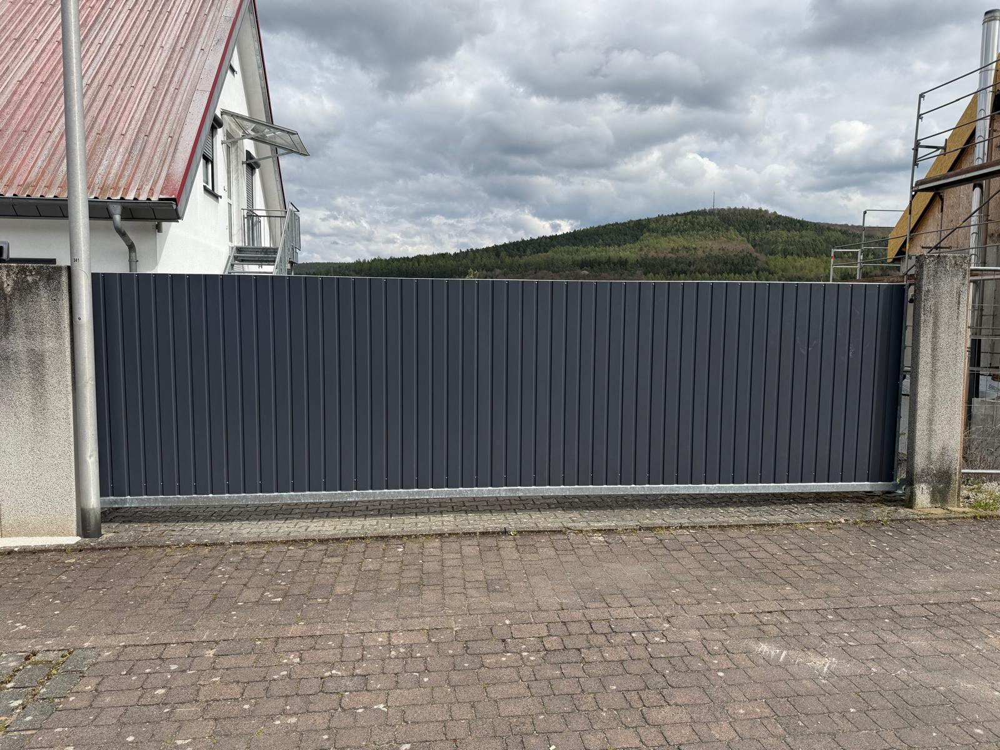

Großes Schiebetor in Anthrazit mit vertikaler Lamellen-Optik, montiert zwischen massiven Betonpfeilern. Robuste Ausführung für gewerbliche und landwirtschaftliche Grundstücke.

Für dieses ländliche Grundstück wurde ein Compact Schiebetor in Anthrazit mit vertikaler Lamellen-Optik gefertigt und zwischen den vorhandenen Betonpfeilern montiert. Die vertikale Linienführung verleiht dem Tor eine kraftvolle, solide Wirkung.
Das Tor ist auf einem stabilen Laufschienenrahmen gelagert und lässt sich leichtgängig öffnen und schließen. Die Pulverbeschichtung in Anthrazit ist witterungsbeständig und langlebig — auch unter rauer Außenbeanspruchung.
Die Verkleidung des Tores wurde vom Kunden selbst angebracht — wir haben das Compact-Grundsystem geliefert und montiert, das die perfekte Basis für individuelle Eigenleistungen bietet. Die Ausführung eignet sich ideal für Hofzufahrten und landwirtschaftliche Betriebe.
Gefällt Ihnen die Umsetzung? Wir realisieren auch Ihr Projekt — individuell auf Ihre Wünsche und Räumlichkeiten abgestimmt.